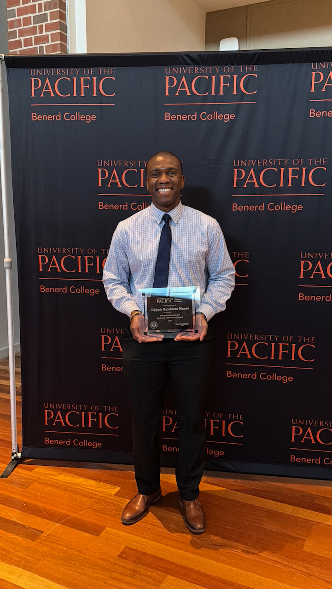
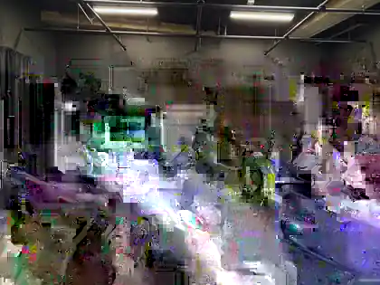
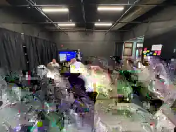
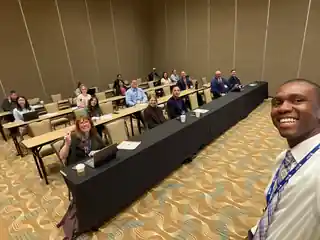

Lead complex systems
Stand up new functions, move significant resources through complicated delivery systems, and build operating structures that hold across independent organizations.
Leadership · Innovation · Empowerment · Mission
Public-sector executive, strategist, researcher, and speaker working on the connective problems that determine whether people and institutions can turn ambitious ideas into durable impact.
“Our greatest potential lies beyond the limits of our own imagination and what we believe is possible.”

About

I was born and raised in Zimbabwe during some of the country's most challenging economic years. That experience taught me resilience, optimism and the value of finding agency even when circumstances are difficult.
I am proud of that heritage and journey. It informs how I lead and my perspective that so much of what we believe is impossible is possible. My career has crossed finance, private-sector management, public service, statewide education leadership, governance, applied research and entrepreneurship.
I have served on the board of a community credit union and as a trustee in one of the world's largest public retirement systems, and I completed a Doctorate in Leadership and Innovation at the University of the Pacific.
The writing, speaking and research shared here reflect my personal views and independent work, and do not represent the position of any employer or agency I serve.
The work
The breadth matters because complex problems rarely stay inside one lane. I do my best work where the problem is important, the stakeholders are different, and the path forward is not obvious.
Stand up new functions, move significant resources through complicated delivery systems, and build operating structures that hold across independent organizations.
Use evidence, experimentation and the expertise closest to the work to adopt new tools without losing judgment, agency or mission.
Create spaces where executives, practitioners, public agencies, advocates and partners can move from different interests toward shared direction.
Speaking
I speak about human-centered AI adoption, empowerment, organizational alignment, innovation and the discipline of optimism—with the goal of leaving people more hopeful, more practical and more capable of acting than when we started.
Meeting of the Minds 2026 · Monterey, California
In September 2026, I delivered the closing keynote at the California Workforce Association's Meeting of the Minds conference. The keynote focused on a simple proposition: AI adoption is not only a technology challenge—it is an opportunity to increase agency, learning and human capability across organizations.
The session connected research on empowerment with the realities leaders and practitioners face as AI changes work, encouraging organizations to make adoption something people help shape rather than something that simply happens to them.
“Terrific talk.”
“I love your messaging around empowerment.”


Research
My doctoral research used participatory action research to examine how public-sector professionals could explore generative AI through training, structured experimentation and shared learning. The people doing the work were not treated simply as end-users of a rollout; they were co-researchers who helped shape how the technology could serve their work.
Governor's Innovation Fellows · September 2026
In September 2026, I spoke with Cohort 3 of the Governor's Innovation Fellows and shared an overview of my dissertation study on generative AI, empowerment and program administration. This was the second Governor's Innovation Fellows cohort I have presented to in the past year, following a session with Cohort 2.
The conversation focused on what the research suggests about human-centered adoption: build baseline capability, create room for thoughtful experimentation, and give the people closest to the work meaningful agency in shaping how new tools are used.


University of the Pacific · Changemakers
I have twice presented through the University of the Pacific's Changemakers series, bringing research and practice into conversation around leadership, innovation and the changing nature of work.
The presentation linked here is separate from my dissertation and reflects a broader conversation about generative AI and public-sector leadership.

CERA 2025 · Empowering Educators through Research and DataCalifornia Educational Research Association · CERA 2025
At CERA 2025, I presented “Empowering State-Level Multilingual Education Leaders: Harnessing Generative Artificial Intelligence for Program Administration”—translating the participatory research behind my doctoral work into a working session for the people who administer these programs statewide.
The session engaged multilingual education leaders directly, using live audience polling and structured discussion to surface how generative AI is actually being used—and where it is most needed—in program administration.
“The future should be something people help shape—not something that simply happens to them.” Dr. Geqigula Dlamini
For keynotes, panels, leadership sessions, research conversations or collaborations, share a little about your audience and what you want them to leave with.